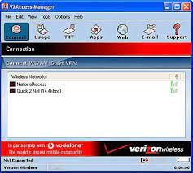
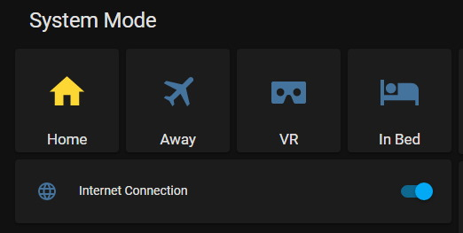

lately i've been thinking a lot about people's relationship with the internet, and how it's changed so much. 15-20+ years ago, internet access was not a constant thing. everyone was offline by default, and connecting to the internet was a deliberate action you had to perform every time you wanted to do anything online. once you were finished with your business online, you deliberately disconnected from the internet, and moved on with your life elsewhere.
i used to access the internet via dialup, which required commanding my computer's modem to call my ISP to initiate an internet connection, which took a little while to complete. i was online only for the duration of that phone call. i couldn't stay online indefinitely due to phone bills, and i couldn't tie up my phone line forever either because i also had to be able to use my phone for, you know, phone calls. after dialup, i accessed the internet via a variety of cell modems (first PCMCIA, then USB). like dialup, these was not an always-on form of internet connectivity. i had to specifically use the VZAccess Manager software to start up the modem and initiate an internet connection, a process that could take ~30 seconds. when i was done with my business online, i shut down the modem, which in turn shut down my internet connection.
contrast that with today, where you have several high-speed internet connections available to you 24/7 that never disconnect and are ready to be used immediately. in theory, this sounds amazing, but in practice, human psychology is not capable of dealing with this power in a healthy manner - our constant, never-ending exposure to the internet has unintentionally caused massive harm to our collective psychology, mental health, and wellbeing. i'm not great at putting my thoughts into words so i can't really go into specifics here, but i'm confident when i say that everyone - including me and you - is suffering from one or more forms of internet addiction right now.
in order to combat that, i'm trying out an experiment on myself where i make my modern internet connection just a little worse, like it was back when i used dialup or a cell modem. i've made my home internet connection no longer always-on - it will now require a deliberate action from me to be enabled and to go online. to do so, i've plugged the power cord of my cable modem into a smart plug that's controlled via home assistant. in order to use the internet, i have to manually turn on the smart plug via the home assistant dashboard, then wait for the cable modem to establish a connection to the cable network.
when i'm done using the internet and ready to go offline, i can manually disable my connection via home assistant. i've also programmed home assistant to automatically shut it off when i go to bed or leave home to make sure that it's off by default.
will this experiment be successful and help me combat my internet addiction? or will i give up and retire the smart plug after a couple of days? tune in next week (or whenever i get around to writing another journal entry) to find out!